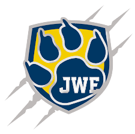

This webpage will show the speeches from all candidates in 8th Grade. You or your teacher can read them before you vote (Grade 8 Voting Link).
Julius Johnson Hello, my name is Julius Johnson I really like to code and make things fun. When running for student council I ask myself what can I do to make everyone feel safe and enjoy there time at school. Since education is one of the most important things in the world for anyone and everyone I wonder me as a student I wonder what us as a school can achieve of the 3 different grades we have at JW EATER. I want to make sure for everyone that this is the best year ever of all time it would be amazing if everyone pitched in and gave ideas, so you might be asking how well I will go ahead and tell you how I plan on going to every student council meeting and make sure everything that needs to be said will be said and I will try to make sure everyone is happy and do what has to be done Somethings I want to learn is more leadership, and something I would love to accomplish is to make sure everyone has the best middle school experience ever! If they are in any of my classes they can write me a note or even right me a email and I will try to respond to everyone and make sure they are also being heard. They can reach out to me at, 14151@rcs.k12.il.us I wish the best luck to anyone else that is running for student council and I hope you guys have a amazing time at JW Eater! all candidates
Raven Wagner "i would like to run because of wanting better for the students and seeing there conserns. I would also like to see teachers and there promblems" I am very well listener to peoples problems and i make sure to get things done. I also make sure this school is following the rules. I love to protect people and i listen to all my adults and i always do my chores. I would never do anything to hrurt people all candidates
Tayvianna Ingram My name is Tayvianna and I like to dance, I value education because I have many goals that I want to accomplish and without an education you wouldn't get far in life Student council will help me develop social skills and I want to accomplish helping find solutions to the problems at school I will come up with ideas and suggestions that will make people listen To all my Jw eater classmates l want you to vote for me because I am a dedicated leader and I will work hard to improve our school, I will listen to your ideas and suggestions if you have any. Go bulldogs! all candidates
Alexis Scott I'd love to be a Student Council member because I am well known among my peers. Personally, I'd like to indulge in a different environment, specifically with team working and applying other's opinions to school events, and etcetera. Furthermore, It would progress my skill of communication. My main focus is my grades. With that being said, with a positive GPA, alongside my streak of all A's, I am can academically prompt and encourage my fellow students to keep a good grades. Personally, I can rotate and work with people no matter what point of view it is. I'm an accepting individual of all personalities and orientations. Proceeding, my creativity could concoct a slew of unique events for the JW Eater community. I am a United States Naval Sea Cadet, which encourages members to be leaders, and follow a think outside of the box, focusing on the operations of the United States Military, or specifically the US Navy, or Marines. Furthermore, I'm great at brainstorming, which has promoted ideas of positive interactions with my peers, and staff at JW Eater. all candidates
Shamiyah Benz Shamiyah I just love learning new things because it's just like kind of exciting to learn new stuff because not everything is boring and I like the challenge and hard work you have to put in because when your done you feel really good about all the hard work you put in I hope to help others with their wants and needs for school.Also I would love to make this a fun place for students because to be honest im not just a nerd who wants to be apart of school because sometimes i feel like im in prison so if there is anything i can do to make school more fun and make people want to show up everyday is worth the work. I hope to learn about others likes and dislikes and how to make life easier I will personally if you have an opinion I will take time to hear you out because every thought and every idea is important. Because I love being creative but that only comes with ideas I will hear you out on bettering school activities and school I get it if you don't want to vote for me because other students will promise you things that are a lot better but if you chose me I will do what i can and make promises that i can keep thank you all candidates
Abi Phillips Hello, my name is Abi Phillips, I’m an 8th grader and I love coming up with new ideas so if you vote for me you are voting for yourself. I will represent you. I listen to every one of your wants and needs and I will try to make this school a better representative of you. I think you should vote for me because I am responsible, reliable, dependable, and I get things done. I want to run for student council because I want to participate in the community and be an active member with our school. I believe this experience will offer me and you new ideas for this school and perspectives. The future of this school and us depends on our ability to work together and communicate. Cooperation and teamwork is the key. I will lead with honesty and openness. I will lead with opinions that everyone has. I take all ideas and opinions on how to make our school better. Voting for someone requires lots of trust in the person. I will work hard everyday to earn your trust. "The function of leadership is to produce more leaders, not more followers.” -Ralph Nader. Thank you for listening. -Abi Phillips all candidates
Brenna Allison I want to be a student council member because i am fun,nice,creative and artsy.I want to be able to make A different for the better in the school even if it isn't a big difference. I believe i am an ideal student council member because I am super creative and Artsy.I Am great at planning events even with a Super low budgets.I know how to plan events,Save/Make money,And I'm super nice. I believe that i would be a good student council member because I love to use m extra fabric to make clothes,i often donate or give them away along with all my other clothes,and toys.i also love Selling my home grown veggies Because they are 100% natural and i sell them for a super cheap price during the summer. all candidates
Jordan Williams My name is jordan, and i like to spend time with my family and football. I value the proccess of learning, it is fun to not understand something then slowly start knowing it. I hope to make school a better place for everyone, i want to host fundraisers and do events for students. I want to learn more about making decisions since i am good at it but would like to be better since you can always learn. If I can I would have homeroom teachers post a form for students and teachers where they would say what could be improved whithin student councils abilities. all candidates
Treyvonne Cunningham Trey and i like to show others how to treat each other with respect. to show people that we live in the same world,and all bleed the same,and die the same. So me i mght not be the best or smartest student but i unsure u will be love so much by not only me but others wll love you the same so i would love to be student counsel. If they vote for me we could make this school a better place! all candidates
Mishawn Ruiz I am smart. I can come up with good ideas, and make people happy. I work well with other people. I can work to make good things all candidates
Makayla Joyner My name is Makayla, I like art and be creative I hope to me new people and to make a differences in the school i well listen to each and everyone of them at a time. Be kind to everyone :) all candidates